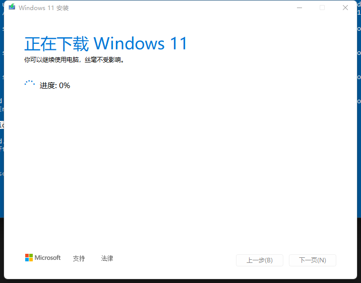
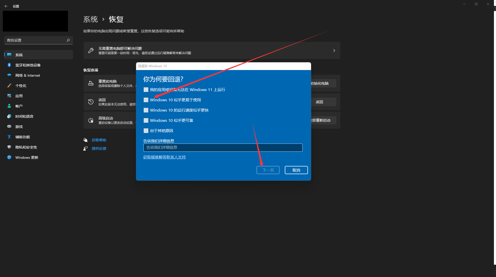

老电脑升级windows11
简介
最近win11的正式版已经开始推送了，一部分符合升级条件的电脑已经可以收到了推送的新系统，但是大部分电脑即使符合条件也没有收到新系统，如果想要升级win11但是电脑不支持或者是没有收到推送那么可以试试我找到的这个工具。
这个工具是开源在Github上的，无论你的电脑支不支持win11的升级都是可以直接升级到win11的，我的台式电脑就是利用这个工具升级到了win11。
这个是直接升级，是不会清空电脑C盘的数据的，当然，如果怕出现意外那么可以备份一下重要的数据。
升级到win11之后，感觉用着不习惯或者是其他情况，想要退回win10也是可以的。
因为我不怎么看评论，所以有问题可以直接联系我，联系方式都是在【关于】页面里面有的。
电脑配置
主板：技嘉B85-D3V-A
处理器：英特尔i5 4590
内存条：金士顿骇客DDR3-8G X2

升级操作步骤
下载工具
打开这个网址，然后点击【Code】下的【Download ZIP】下载工具
下载完成后是一个压缩包
开始升级
解压，然后进入解压出来的文件夹
右键【MediaCreationTool.bat】，以管理员身份运行【MediaCreationTool.bat】
之后出现这个界面，选择【11】
然后选择【Auto Upgrade】，这个选项是自动升级选项，直接升级到WIN11，C盘是不会清空的，所有文件和数据都是保留的
如果需要做到U盘上给其他电脑安装，那么可以选择第三个选项【Make USB】
点击自动升级之后，我们只需要等待就可以，不用任何操作，系统下载完成后会自动重启更新的

退回win10操作步骤
升级了win11之后在电脑的C盘可以看到一个【Windows.old】文件夹，这个文件夹保存的就是之前的win10，所以在你还没有确定要不要退回win10的时候这个文件夹是不能删除的。
如果需要退回win10，那么打开电脑的【设置】，找到【Windows更新】
选择【高级选项】
点击【恢复】
在恢复里面可以看到一个【返回】选项，点击【返回】
然后随便选一个原因，点击下一页就可以了

工具地址
Github地址：https://github.com/AveYo/MediaCreationTool.bat
结尾彩蛋

本博客所有文章除特别声明外，均采用 CC BY-SA 4.0 协议 ，转载请注明出处！